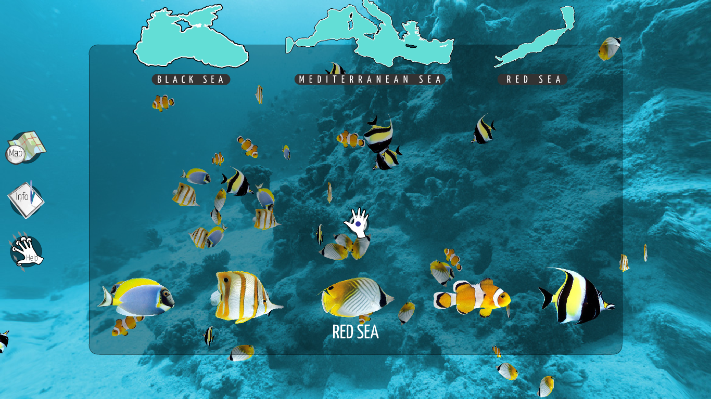

click and grab for zoom!

My last and final year project in Temasek Polytechnic, developed an application for Kinect, with the theme Virtual Live Aquarium for a client, which the fish could even follow the movement of your body! How cool is that?
Got chosen in project showcase too, but as of now I do not know when will it be.
Will update soon.